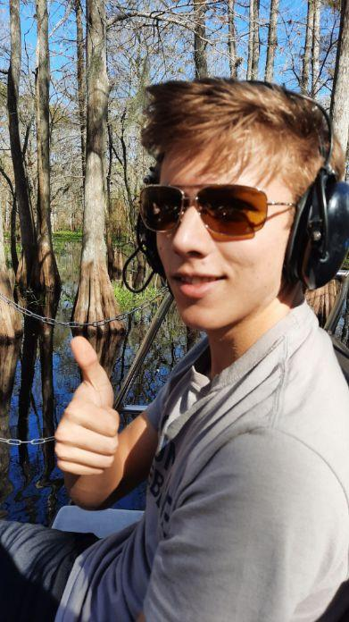
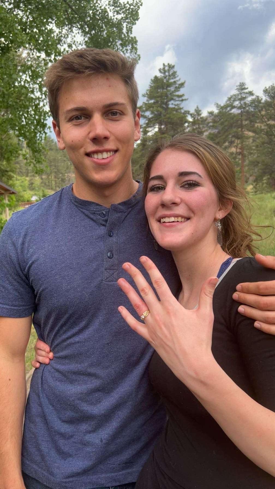
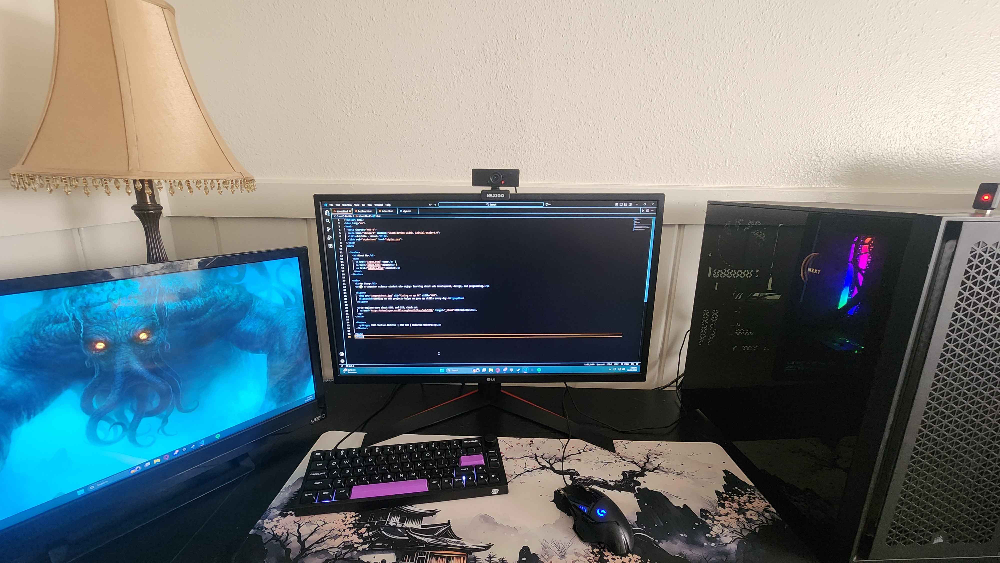

My Story
I’m a computer science student with a passion for learning and problem-solving. One of my favorite activities is exploring new places and trying adventurous experiences like airboating in Florida. Moments like these inspire creativity and help me think outside the box in my coding projects.
Aside from tech and coding, I spend time with my dog Scotty, who keeps me motivated and happy. Sharing adventures and projects with loved ones makes every accomplishment more meaningful.
My Goals
My ultimate goal is to work in web or software development, building solutions that simplify technology and improve user experiences. I strive to learn full-stack development while mastering new frameworks and languages. Every milestone, both personal and professional, drives me to grow further.
Sharing these moments with my fiancée reminds me of the importance of perseverance and passion. Life experiences outside of coding often influence my approach to problem-solving and creativity.
Fun Facts About Me
I love customizing PCs and experimenting with new software tools to optimize performance. Building and fine-tuning my PC setup is a combination of work and fun, helping me learn hardware and software intricacies.
- I enjoy hands-on car projects and learning about engines.
- I love gaming, tech gadgets, and experimenting with code.
- Spending time outdoors with my dog keeps me balanced and motivated.
Combining my hobbies with my coding skills allows me to create personal projects that are both fun and challenging.